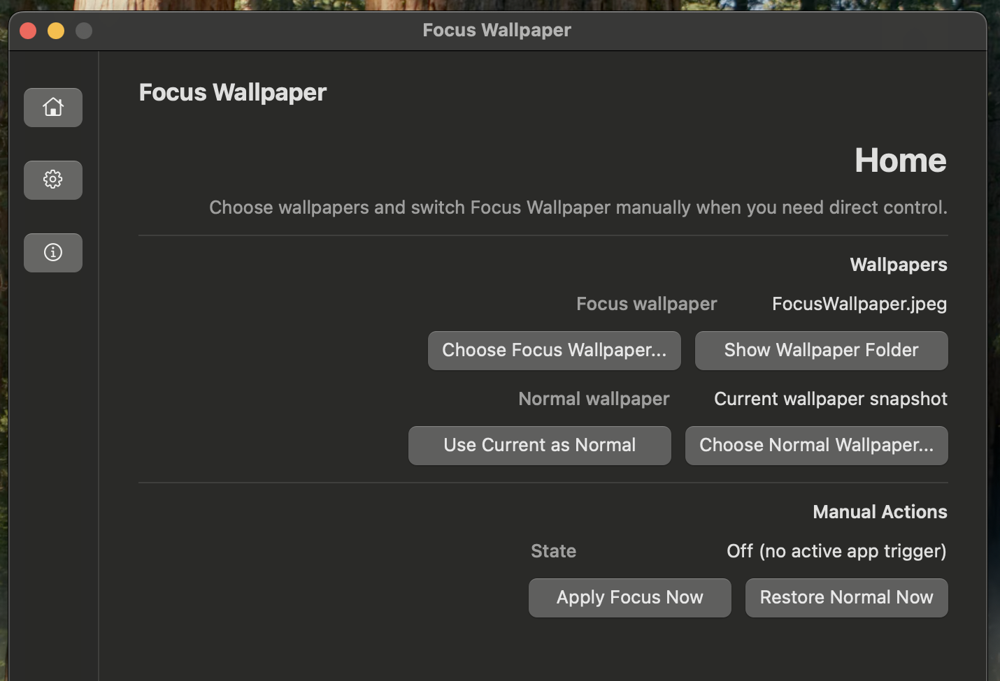
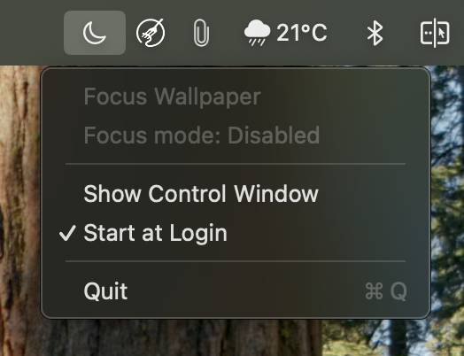
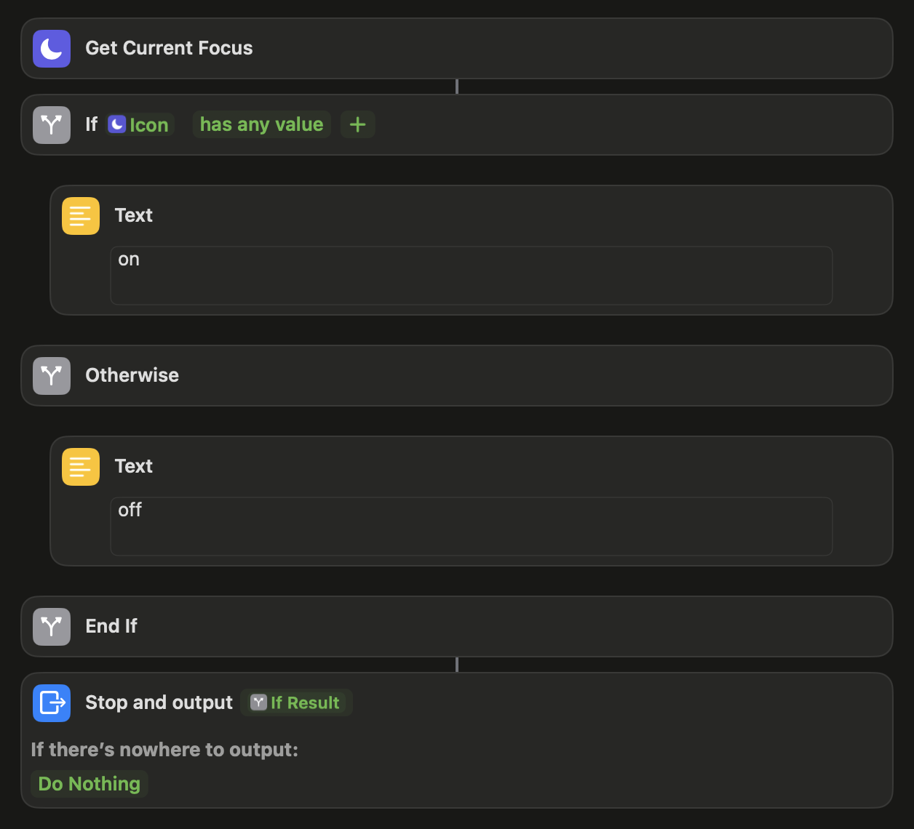

Focus aware
Use direct URL automations or Automatic Sync to keep wallpaper state aligned with macOS Focus.
macOS menu bar app · version 1.1.0
Switch your desktop wallpaper when Focus turns on, then restore your normal wallpaper when Focus ends.
Use direct URL automations or Automatic Sync to keep wallpaper state aligned with macOS Focus.
Home, Settings, and About are organized in a compact left-rail layout with setup, sync, and app details.
Wallpaper files, logs, and LaunchAgent settings stay on your Mac. No account or network service is required.

Choose a Focus wallpaper, preserve a normal wallpaper, manage Automatic Sync, enable Start at Login, and check app metadata from one control window.
The menu keeps only the essentials: app name, Focus state, Show Control Window, Start at Login, manual Focus On/Off when Automatic Sync is off, and Quit.

focuswallpaper://on and focuswallpaper://off, or use the bundled sync shortcut template.
Planned work includes detecting the current Focus mode name through Shortcuts and mapping it to specific wallpapers.
The roadmap includes separate wallpaper choices for Work, Personal, Sleep, and other named Focus modes.
A future wallpaper manager will add previews, drag-and-drop import, and quick actions for each configured wallpaper.
Build the app with scripts/package_app.sh, then create a distributable image with scripts/package_dmg.sh. The download link targets the generated DMG.